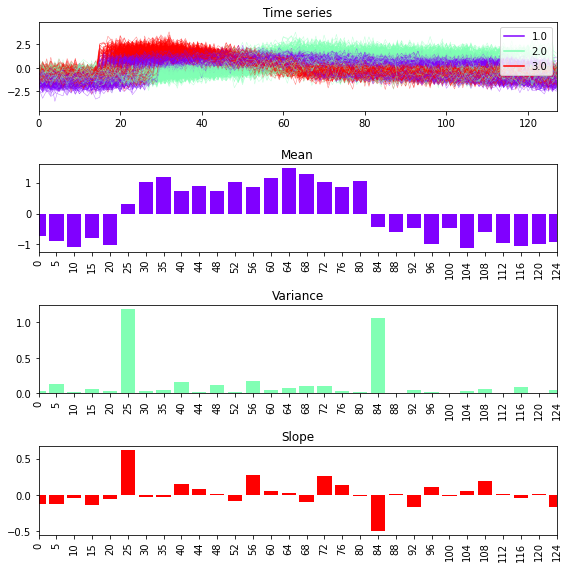
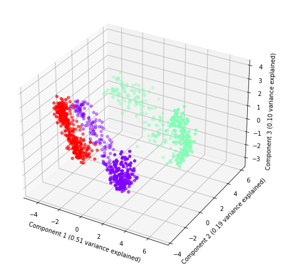

Interval#
In these examples we will explore the interval transform.
[1]:
import numpy as np
import matplotlib.pylab as plt
from sklearn.decomposition import PCA
from sklearn.pipeline import make_pipeline
from wildboar.datasets import load_dataset
from wildboar.transform import IntervalTransform
from wildboar.utils.plot import plot_time_domain
random_state = 1234
First, we load a dataset.
[2]:
x, y = load_dataset("CBF")
Next, we define an interval transform with a fixed non-overlapping amount of intervals, where each interval is summarized as its mean, variance and slope.
[3]:
fixed = IntervalTransform(n_intervals=30, summarizer="auto", intervals="fixed")
We fit and transform the time series and extract the start index for each interval.
[4]:
x_t = fixed.fit_transform(x)
labels = ["%s" % start for (dim, (start, length, _)) in fixed.embedding_.features]
n_features = x_t.shape[1]
Finally, we plot the time series and the mean, variance and slope respectivley.
[5]:
fig, ax = plt.subplots(nrows=4, figsize=(8, 8))
plot_time_domain(x, y=y, ax=ax[0], cmap="rainbow")
ax[0].title.set_text("Time series")
colors = plt.cm.rainbow(np.linspace(0, 1, 3))
titles = ["Mean", "Variance", "Slope"]
for i in range(3):
ax[i + 1].bar(labels, x_t[0, i:n_features:3], color=colors[i, :])
plt.setp(ax[i + 1].get_xticklabels(), rotation="vertical", ha="center")
ax[i + 1].title.set_text(titles[i])
ax[i + 1].set_xlim([0, 29])
plt.tight_layout()

[6]:
def plot(p, var, labels, index):
colors = plt.cm.rainbow(np.linspace(0, 1, len(labels)))
fig = plt.figure(figsize=(8, 8))
ax = fig.add_subplot(projection="3d")
ax.scatter(p[:, 0], p[:, 1], p[:, 2], color=colors[index, :])
ax.set_xlabel("Component 1 (%.2f variance explained)" % var[0])
ax.set_ylabel("Component 2 (%.2f variance explained)" % var[1])
ax.set_zlabel("Component 3 (%.2f variance explained)" % var[2])
[7]:
labels, index = np.unique(y, return_inverse=True)
Similar to the other transforms we use principal component analysis to explore the resulting dataset.
[8]:
ie = make_pipeline(
IntervalTransform(
n_intervals=100,
summarizer="auto",
intervals="random",
random_state=random_state,
n_jobs=-1,
),
PCA(n_components=3, random_state=random_state),
)
plot(ie.fit_transform(x), ie.steps[1][1].explained_variance_ratio_, labels, index)

[ ]: